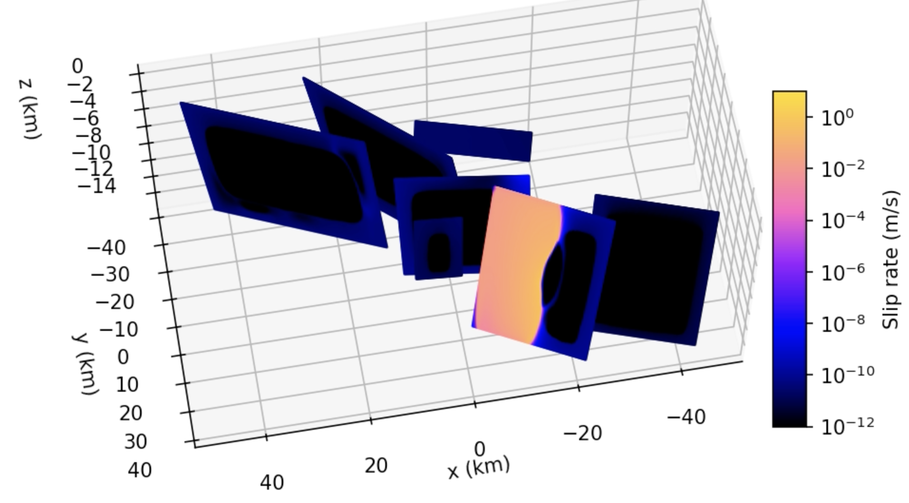
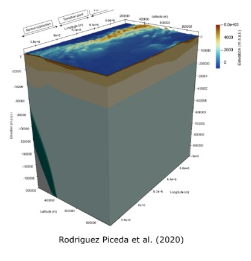
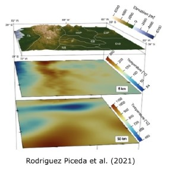
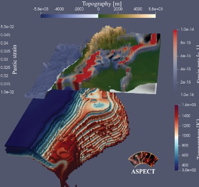
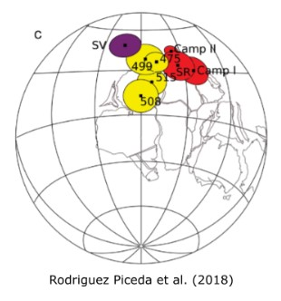

Research Interests
From lithospheric- to crustal-scale processes
From lithospheric- to crustal-scale processes
Earthquakes in convergent margins pose one of the greatest hazards on Earth. One example is the 2016 Norcia-Amatrice sequence in the Central Appenines (Italy). Numerical modelling of seismic cycles is a powerful tool to understand the causative dynamics behind the earthquake behaviour. These models are often simplified considering a single fault with planar geometry. However the roles of fault geometry and neighbouring structures is typically overlooked. As part of the Quake4D project, I am working in the development 3D models of that incorporate the observed geometric variability including complex fault networks with changing strike. To that aim, I use the boundary-element code QDYN. These models can be ultimately used to inform seismic hazard assessment studies.
One main factor controlling strain localization in the lithosphere is crustal inheritance (i.e, thickness and composition of the sediments and crystalline crust). To constrain the lithospheric structure, I integrate different kind of data including geological and thickness maps, active seismic, seismic tomography, wellbore temperatures and heat flow measurements into consistent models of the crust and the lithosphere. Gravity modelling is a powerful technique to assess the deep subsurface structure of the lithosphere, which is not accessible by other methods like drilling or active seismics. I carry out lithospheric-scale 3D modelling with forward and inverse approaches to calibrate the data-integrative models. Some of the software I used for this tasks are Paraview, IGMAS+ (Schmidt et al., 2010), Fatiando a Terra (Uieda et al., 2013) to define the density and thickness distributions of the layers that make up the lithosphere. These models can be used as input for further investigations on the thermal and mechanical state of the lithosphere.
Relevant publication: Rodriguez Piceda, C., Scheck-Wenderoth, M., Gomez Dacal, M.L., Bott, J., Prezzi, C.B. & Strecker M., (2020). Lithospheric density structure of the southern Central Andes constrained by 3D data-integrative gravity modelling. International Journal of Earth Sciences
Defining the thermal structure of subduction zones is essential to assess the controls of deformation of the overriding plate and distribution of seismicity. I am interested in quantifying the temperatures of this type of convergent margins through multiple approaches including numerical modeling and seismic tomography. To that aim I use different software, including the finite element software GOLEM (Jacquey and Cacace 2017) and LYNX (Cacace and Jacquey 2020). I aim at understanding the degree of influence of both the configuration of the upper plate and variations of the subduction angle on the lithospheric thermal field.
Relevant publication: Rodriguez Piceda, C., Scheck-Wenderoth, M., Bott, J., Cacace, M., Gomez Dacal, M.L., Pons, M., Prezzi, C.B. & Strecker M., (2022). Controlling factors of an oceanic-continental subduction zone: the southern Central Andes. Lithosphere
 I am interested in the causative relationships between the variations of lithospheric long-term strength and the strain localization at different temporal scales. In particular, I investigate the influence of the crustal inheritance and the slab geometry in the mechanical strength of the lithosphere and how this ultimately affects present-day surface deformation. The variation of mechanical strength of a region depends mainly on the temperature distribution and composition. In subduction zones, these heterogenities can also affect the plate coupling, which ultimately has an effect on the overriding plate deformation patterns and on the subduction angle of the oceanic slab. I use existent data-based structural thermal models to quantify the long-term strength of the lithosphere related to tectonic inheritance or to effects of the slab geometry. At seismic scales, I look at the distribution and magnitude of seismic events as a function of the lithospheric rheology. At tectonic scales, I evaluate the causative relationship between rheology variations of the overriding plate and the foreland deformation style (thick-skinned vs. thin-skinned). In addition, I integrate these data-based models in geodynamic simulations with the software ASPECT in order to look at the effect of dynamic stresses in the localization of deformation.
Relevant publication: Rodriguez Piceda, C., Scheck-Wenderoth, M., Cacace M., Bott, J., & Strecker M., (2022). Long-term lithospheric strength and intraplate seismicity in the southern Central Andes (29°S-39°S).Geochemistry, Geophysics, Geosystems
Lithospheric-scale processes has been part of my research interests since my initial studies. During my undergraduate studies, I aimed at determining paleomagnetic poles in order to assess the tectonic displacements or rotations of crustal terranes during the Late Proterozoic-Early Cambrian. I focused on paleogeographic reconstructions of crustal terranes in South America using paleomagnetic techniques, including anisotropy of magnetic susceptibility (AMS), isothermal remnant magnetization (IRM) and alternating field and thermal demagnetization.
Relevant publication: Rodriguez Piceda, C., Franceschinis, P., Escayola, M., & Rapalini, A. (2018). Paleomagnetismo del Grupo Santa Victoria en la sierra de Mojotoro, Salta: aportes a la reconstrucción paleogeográfica de Pampia en el Paleozoico temprano.Revista de la Asociación Geológica Argentina
Cacace, M., & Jacquey, A. B. (2017). Flexible parallel implicit modelling of coupled thermal–hydraulic–mechanical processes in fractured rocks. Solid Earth, 8(5), 921-941.
Jacquey, A. B., & Cacace, M. (2020). Multiphysics Modeling of a Brittle‐Ductile Lithosphere: 1. Explicit Visco‐Elasto‐Plastic Formulation and Its Numerical Implementation. Journal of Geophysical Research: Solid Earth, 125(1).
Schmdit, S., Götze, H. J., Fichler, C., & Alver, M. (2010). IGMAS+ a new 3D Gravity, FTG and Magnetic Modeling Software. In Geoinformatik (pp. 57-63).
Uieda, L., Oliveira Jr, V.C. & Barbosa, V.C. (2013). Modeling the earth with fatiando a terra. In Proceedings of the 12th Python in Science Conference (pp. 96-103).